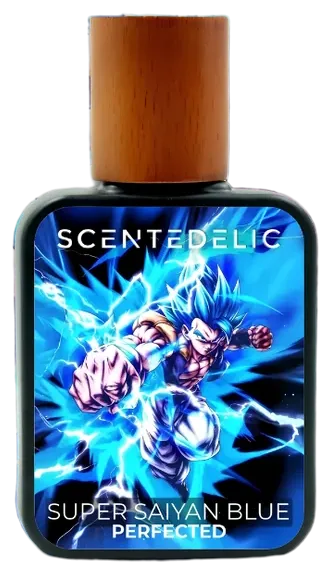

Super Saiyan Blue Perfected by Scentedelic as an authentic decant — an Aromatic, Citrus, Lavender, Woody, Amber, Musky, Spicy. inspired by PDM Percival. Ships across India with free shipping over ₹999 on 2+ decants.
| Size | Price | Per ml |
|---|---|---|
| 3ml | ₹149 | ₹50 |
| 5ml | — | — |
| 7.5ml | — | — |
| 10ml | — | — |
| 20ml | — | — |
| 30ml | — | — |
Currently in stock for decants.
Copy your choice and message us on WhatsApp — we confirm stock and payment instantly.
Order on WhatsAppCall +91 93555 33509Notes / profile: Aromatic, Citrus, Lavender, Woody, Amber, Musky, Spicy.
Best for: Spring / Summer / Fall seasons, day and evening, for daily, office, mild, hot weather.
Mood: Energetic, Confident.
Reminds me of: PDM Percival.
References: Scentedelic
Learn how this decant is filled and verified.
Season: Spring, Summer, Fall.
Occasion: Daily, Office.
Time of day: Day, Evening.
Weather: Mild, Hot.
Fragrance family: Aromatic, Woody.
Made for: Men.
A 3ml decant is the smallest way to try this scent before committing to a larger size. New to decants? Read the decant vs full bottle guide, or see how to make perfume last longer.
It is a high-quality interpretation inspired by PDM Percival. Perfume enthusiasts in India often pick it as an affordable alternative to that profile.
IRAM Perfume sells authentic decants of Super Saiyan Blue Perfected by Scentedelic at 3ml ₹149. Shipping is free on 2-decant orders above ₹999. Full bottles are available on request.
A men's fragrance, it works best during Spring / Summer / Fall seasons, day and evening, for daily, office, mild, hot weather. It leans energetic,confident in character with an Aromatic, Citrus, Lavender, Woody, Amber, Musky, Spicy profile.